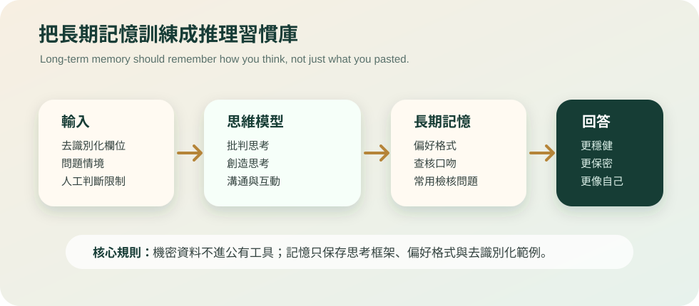

Day 13 installed a reasoning chain inside the agent. Day 14 goes one step further: use Minerva-inspired thinking models as long-term memory, so specific answer types become steadier, safer, and closer to how a professional auditor thinks.
What are the Minerva thinking models?
Based on the workbook you provided, 密涅瓦80個思維模型.xlsx, the framework organizes habits into four capabilities: critical thinking, creative thinking, effective communication, and effective interaction. It is not a vocabulary list to memorize. It is a set of questions to ask when a problem appears.
For an unusual transaction, critical thinking checks source quality. Creative thinking generates alternative hypotheses. Effective communication turns the finding into a format management can act on. Effective interaction reminds you to consider power dynamics in interviews.

What should long-term memory remember?
Holmes would not keep every blood sample in his coat. He would remember what a stain might mean—and how it might mislead. AI should work the same way.
- Good memory: preferred output formats, review questions, risk language, reasoning order, de-identified examples.
- Bad memory: company names, personal data, transaction details, contract text, passwords, non-public financial information, or details that identify a case.
For internal data, use an approved enterprise AI agent, private cloud, or on-premises model. Public tools should receive only field names, synthetic data, or abstracted questions.
How auditors can use it
Once the model is placed in long-term memory, you can ask the agent to apply the same reasoning pattern to a class of tasks:
When I ask you to analyze an audit finding, always:
1. separate claims from facts
2. check source quality
3. generate at least three alternative hypotheses
4. look for evidence that could disprove the current conclusion
5. calibrate conclusion strength as high / medium / low
6. list the next audit procedures
Do not request or store company secrets, personal data, transaction details, or non-public information.The benefit is simple: less intuitive verdict, more reconstructable reasoning; less polished filler, more next steps that can enter the working paper.
It also works in life
These models are not just for audit. When buying a home, ask AI to check base rates, source quality, and sunk cost. When handling conflict, use perspective-taking, common ground, and emotional persuasion. When learning a skill, use constraints, analogies, and self-learning to design practice.
Long-term memory turns AI from “a tool that answers” into “a partner that understands how you judge.” That difference matters. One is an encyclopedia. The other is a Watson who knows your method.
From “analyze this” to “analyze this using my reasoning habits”
An auditor saved a reasoning pattern in an approved enterprise agent: separate claims, check sources, list hypotheses, seek counterevidence, and calibrate. The next time an expense anomaly appeared, the AI did not jump to “suspected fraud.” It wrote: “Current risk is medium. Possible explanations include seasonal activity, classification error, budget transfer, or improper reimbursement. Next evidence: contract, approval log, and period base rate.” That is the real value of long-term memory.
References
- User-provided workbook: 密涅瓦80個思維模型.xlsx
- Minerva University: Pedagogy and HCs
- Minerva: Cornerstone Curriculum and core competencies